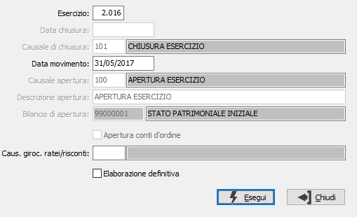

Generazione giroconti apertura
La procedura consente di effettuare la generazione del giroconto per la chiusura dei ratei e risconti se non effettuato in fase di apertura; sono considerati tutti i movimenti del periodo chiuso che hanno in contropartita i conti fissi (definiti nella tabella dei “Codici fissi” in Os1Config) "Ratei e risconti attivi/passivi". I movimenti di storno valore di apertura sono generati nella data indicata per l’apertura con la causale specificata a video. Ai fini della generazione del movimento di giroconto non sono considerati i movimenti relativi a ratei e risconti inseriti di cui la procedura non riesce ad individuare la contropartita (ad esempio quando nella stessa registrazione vengono movimentati sia ratei che risconti con una registrazione di uno a molti).
